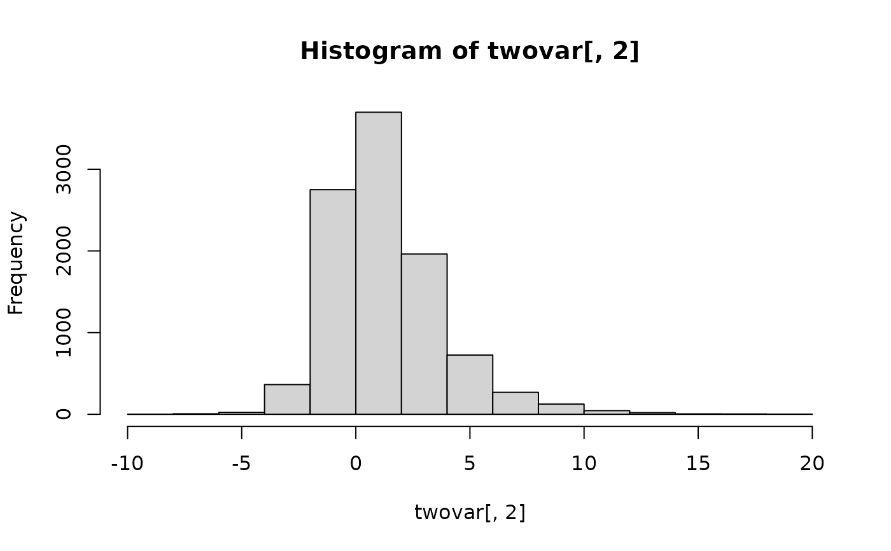
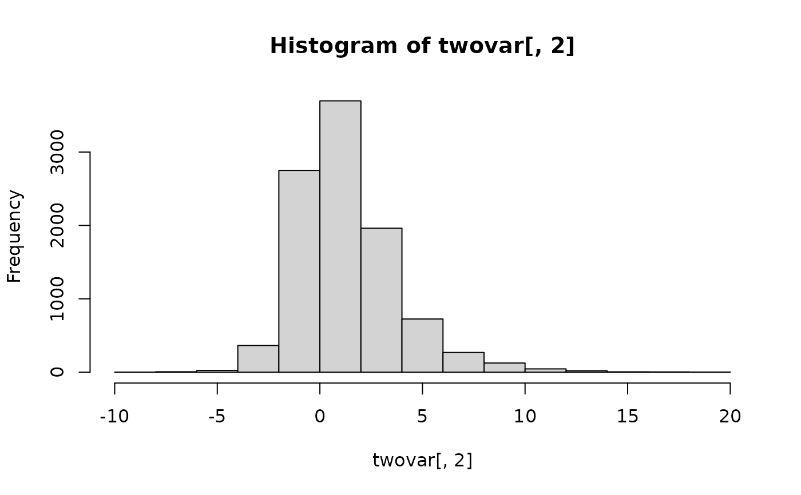

Generate non-normal distributions using the multivariate g-and-h distribution. Can be used to generate several different classes of univariate and multivariate distributions.
Arguments
- n
number of samples to draw
- g
the g parameter(s) which control the skew of a distribution in terms of both direction and magnitude
- h
the h parameter(s) which control the tail weight or elongation of a distribution and is positively related with kurtosis
- mean
a vector of k elements for the mean of the variables
- sigma
desired k x k covariance matrix between bivariate non-normal variables
References
Chalmers, R. P., & Adkins, M. C. (2020). Writing Effective and Reliable Monte Carlo Simulations
with the SimDesign Package. The Quantitative Methods for Psychology, 16(4), 248-280.
doi:10.20982/tqmp.16.4.p248
Sigal, M. J., & Chalmers, R. P. (2016). Play it again: Teaching statistics with Monte
Carlo simulation. Journal of Statistics Education, 24(3), 136-156.
doi:10.1080/10691898.2016.1246953
Author
Phil Chalmers rphilip.chalmers@gmail.com
Examples
set.seed(1)
# univariate
norm <- rmgh(10000,1e-5,0)
hist(norm)
 skew <- rmgh(10000,1/2,0)
hist(skew)
skew <- rmgh(10000,1/2,0)
hist(skew)
 neg_skew_platykurtic <- rmgh(10000,-1,-1/2)
hist(neg_skew_platykurtic)
# multivariate
sigma <- matrix(c(2,1,1,4), 2)
mean <- c(-1, 1)
twovar <- rmgh(10000, c(-1/2, 1/2), c(0,0),
mean=mean, sigma=sigma)
hist(twovar[,1])
hist(twovar[,2])

plot(twovar)
neg_skew_platykurtic <- rmgh(10000,-1,-1/2)
hist(neg_skew_platykurtic)
# multivariate
sigma <- matrix(c(2,1,1,4), 2)
mean <- c(-1, 1)
twovar <- rmgh(10000, c(-1/2, 1/2), c(0,0),
mean=mean, sigma=sigma)
hist(twovar[,1])
hist(twovar[,2])

plot(twovar)